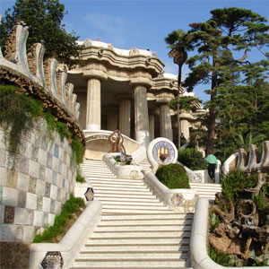

Home History Buildings Restaurants The Beach
| La Sagrada Familia |
| Park Guell |
| Casa Mila |
| Torre Agbar |
| Casa Estape |
| Casa Batllo |
| Camp Nou Stadium of F.C Barcelona |
| Palau de la Musica |
Park Guell

Park Güell is a garden complex with architectural elements situated on the hill of El Carmel in the Gràcia district of Barcelona, Catalonia, Spain. It was designed by the Catalan architect Antoni Gaudí and built in the years 1900 to 1914. It has an extension of 17.18 ha (0.1718 km²), which makes it one of the largest architectural works in south Europe. It is part of the UNESCO World Heritage Site "Works of Antoni Gaudí".
The park was originally part of a commercially unsuccessful housing site, the idea of Count Eusebi Güell, after whom the park was named. It was inspired by the English garden city movement; hence the original English name Park (in Catalan the name is "Parc Güell"). The site was a rocky hill with little vegetation and few trees, called Muntanya Pelada (Bare Mountain). It already included a large country house called Larrard House or Muntaner de Dalt House, and was next to a neighborhood of upper class houses called La Salut (The Health). The intention was to exploit the fresh air (well away from smoky factories) and beautiful views from the site, with sixty triangular lots being provided for luxury houses. Count Eusebi Güell added to the prestige of the development by moving in 1906 to live in Larrard House. Ultimately, only two houses were built, neither designed by Gaudí. One was intended to be a show house, but on being completed in 1904 was put up for sale, and as no buyers came forward, Gaudí, at Güell's suggestion, bought it with his savings and moved in with his family and his father in 1906. This house, where Gaudí lived from 1906 to 1926, was built by Francesc Berenguer in 1904. It contains original works by Gaudí and several of his collaborators. It is now the Gaudi House Museum (Casa Museu Gaudí) since 1963. In 1969 it was declared a historical artistic monument of national interest.